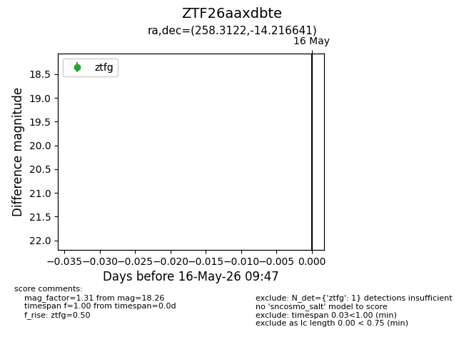
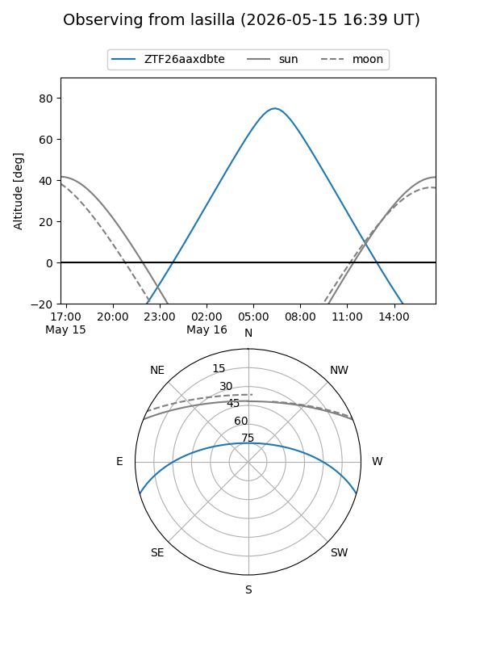
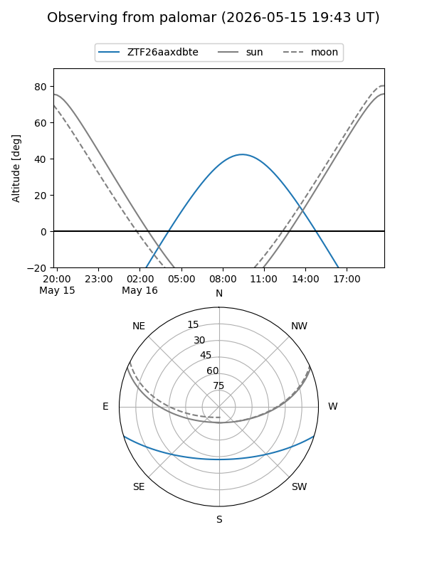

ZTF26aaxdbte
Target ZTF26aaxdbte at 2026-05-16 09:49
Aliases and brokers:
FINK: link
Lasair: link
ALeRCE: link
alt names
ZTF26aaxdbte (ztf,fink_ztf)
Coordinates:
equatorial (ra, dec) = 258.3122,-14.21664
equatorial (HMS+DMS) = 17:13:14.92,-14:12:59.91
galactic (l, b) = (8.4123,+14.26650)
Flags:
Photometry:
last ztfg=18.26
1 ztfg detections
Lightcurve

Visibility


Additional plots